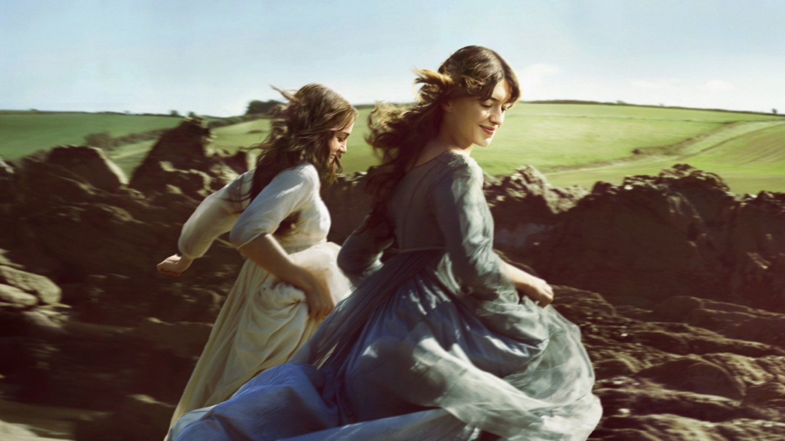
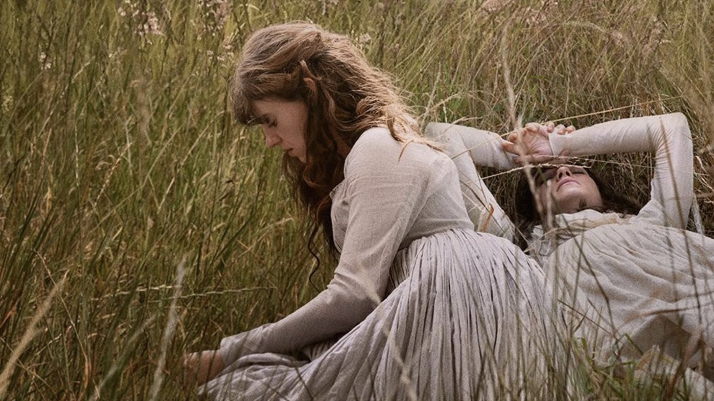

Ragione e sentimento (2026): recensione del film di Oakley
Un Austen sporco di fango che guadagna le sorelle ma perde Edward, e per questo divide la critica
Un Austen senza cappellini e con i capelli in disordine ha un vantaggio e un prezzo. Il guadagno è che Elinor e Marianne tornano ragazze vere, che si arrabbiano e poi si sdraiano insieme nell'erba. Il prezzo, però, è che accanto a loro la storia d'amore di Elinor si svuota, perché Edward diventa una presenza sbiadita. Georgia Oakley ha scelto le sorelle e ha sacrificato l'amore di Elinor: per noi è una scommessa giusta a metà, perché regala al film i suoi momenti migliori ma gli toglie il finale.
Di cosa parla
Alla morte del padre la tenuta passa al fratellastro, quindi le sorelle Dashwood restano con poco denaro e molte aspettative. Elinor, la ragione, è Daisy Edgar-Jones; Marianne, l'impeto, è Esmé Creed-Miles. Attorno a loro George MacKay è Edward Ferrars, Frank Dillane è Willoughby, Herbert Nordrum il colonnello Brandon e Fiona Shaw la chiacchierona signora Jennings. La sceneggiatura è di Diana Reid, dal romanzo del 1811.

Il fatto che cambia come lo guardi
Le due sorelle sono vestite con colori diversi per natura, non solo per gusto. Gli abiti di Marianne sono tinti con i fiori di sambuco, che danno un giallo pallido, quelli di Elinor con il legno di campeggio, che vira verso il lavanda. Dietro c'è l'idea di Oakley, che la produttrice India Flint ha riassunto in una parola: un film «unbuttoned», sbottonato. La costumista Grace Snell l'ha tradotta togliendo i colori vivaci e le maniche a sbuffo, mentre i cappellini compaiono di rado; per il resto dominano grigi e toni scuri, perché la famiglia è in lutto e senza soldi. Saperlo cambia la visione: ogni volta che le sorelle sono in campo insieme, si distinguono a colpo d'occhio, e il carattere di ciascuna si legge già nella stoffa, prima ancora che apra bocca.
La scena che vale il film
La scena che per noi riassume tutto è anche la più semplice. Marianne resta fuori sotto la pioggia, con i capelli sciolti, e beve l'acqua che le cade addosso. Non ha bisogno di battute, perché in quel gesto c'è il personaggio intero: l'impulso che arriva sempre prima della prudenza, cioè l'esatto contrario di Elinor, che invece misura ogni parola. È qui che il film dice la sua verità, e spiega meglio di qualsiasi dialogo perché Oakley abbia voluto un Austen spettinato.
Altre due scene in cui la tesi funziona
La prima è l'ingresso di Willoughby. Durante una gita vicino all'acqua Marianne si storce la caviglia e lui la soccorre: niente salotto né presentazione formale, ma un incontro che nasce dal fango e da un piede dolorante.
La seconda invece è un momento di calma: Brandon e Marianne davanti a un grande camino, quando il colonnello finalmente le confida il segreto che si porta dietro. Per qualche minuto il film si chiude in una stanza sola, con il fuoco acceso e due persone che si parlano piano. Oakley mostra anche il duello tra Brandon e Willoughby, che il film del 1995 aveva lasciato fuori, e allora la rabbia degli uomini, di solito tenuta ai margini, qui prende corpo.

Il ballo, dove il film mostra il suo limite
Oakley ha spiegato a TheWrap che le feste da ballo erano l'unico spazio in cui uomini e donne potevano «touch each other and be kind of free», toccarsi ed essere un poco liberi. Per questo il primo ballo di paese è stato girato in due giorni e quello londinese, più sfarzoso, in quattro, con la coreografia di Holly Blakey. Dentro quella libertà la regista colloca il momento più triste, la danza tra Elinor ed Edward, che per lei è «almost a farewell», quasi un addio, dato che i due sanno di non poter stare insieme.
L'idea è giusta, però qui si vede anche il limite. Un addio commuove solo se prima abbiamo creduto all'amore, e il film non ce ne ha dato abbastanza. George MacKay ha detto che l'umorismo condiviso è il linguaggio d'amore tra Edward ed Elinor; sullo schermo, invece, quella complicità resta un accenno, quindi la danza vive più di ciò che sappiamo dal libro che di ciò che accade tra loro.
Contro il film di Ang Lee
Il confronto inevitabile è con il film di Ang Lee del 1995. Lì Emma Thompson, che scrisse anche la sceneggiatura e vinse l'Oscar per il copione, era Elinor, mentre Kate Winslet era Marianne, Alan Rickman il colonnello Brandon e Greg Wise Willoughby. Soprattutto, Hugh Grant interpretava un Edward più compiuto e onorevole di quello del romanzo, pensato per piacere al pubblico moderno. Oakley fa la scelta opposta: Thompson aveva fatto di Edward un uomo da amare, lei lo lascia sullo sfondo, e quindi la ragione di Elinor si regge su un contraltare debole.
Anche lo sguardo è diverso. Il film del 1995 fu lodato perché evitava le «chocolate-box visuals», le immagini da scatola di cioccolatini di tanti film in costume, ma restava pulito; qui invece lo sporco è la regola. Ed è proprio questo, allora, che spiega i capelli. Alessandra Quattrocchi, sulla Voce di New York, li trova inverosimili e fastidiosi: Elinor ogni tanto e Marianne sempre con le chiome sciolte, come se non vedessero una spazzola da settimane. Ci permettiamo di dissentire, perché chi beve la pioggia a capo scoperto e veste abiti tinti con i fiori non può presentarsi alla festa pettinata come in un ritratto. Si può non amare la scelta, ma è coerente con tutto il resto.
Dove inciampa
Torniamo al prezzo, perché è qui che il film si incrina. Per Monica Castillo dell'AV Club con l'Edward di MacKay la chimica è minima. Il nostro esempio è proprio il ballo: la danza dovrebbe essere un addio, ma il film non ci dà prima una scena che ci faccia desiderare davvero che i due restino insieme. Elinor, che dovrebbe essere il centro morale del film, finisce quindi per reagire più che agire, ed Edgar-Jones, brava a trattenersi, non ha niente di forte da tenere dentro.
Da qui nasce il nostro difetto principale, il finale. Nella trama Lucy lascia Edward quando lui perde l'eredità e sposa suo fratello Robert, perciò Elinor ed Edward possono fidanzarsi. Con una chimica così scarsa, però, quel lieto fine arriva come una formalità: la ricompensa di Elinor non si sente, e il film più coraggioso sulle sorelle chiude con la sua scena meno viva. Quattrocchi contesta anche la giustificazione inventata per il fidanzamento di Edward con Lucy, un'aggiunta che le pare artificiosa; noi aggiungiamo la lunghezza, troppa per un film che vive di sfumature. A tenere alta l'attenzione restano Fiona Shaw, che Quattrocchi definisce magnifica, e il Willoughby «viscido» di Frank Dillane, come lo chiama ancora l'AV Club.
Chi va al cinema in Italia lo vedrà doppiato, ma i nomi dei doppiatori non risultano ancora in nessuna scheda ufficiale che abbiamo consultato: per questo non possiamo dire chi presti la voce a Elinor e Marianne.
I numeri, in un paragrafo
Il film dura 132 minuti, quindi più di due ore. A fine ottobre 2026 Rotten Tomatoes è al 76% su 117 recensioni, con il pubblico all'88%; Metacritic a 71 su 100 su 41 recensioni; il CinemaScore è A-. I giudizi vanno dalle 5 stelle su 5 del Telegraph al C+ dell'AV Club. Per confronto, il film del 1995 raccolse 135 milioni di dollari con un budget di 16, mentre quello di Oakley è arrivato a 29,4 milioni nel mondo, di cui 8,4 nel solo Regno Unito, dove è uscito per primo, a fronte di un budget tra i 20 e i 25 milioni. In Italia è in sala da pochi giorni, quindi le cifre non sono ancora leggibili.
A chi lo consigliamo
Lo consigliamo a chi ama Austen per i personaggi più che per i colpi di scena, e a chi ha una sorella e sa quanto pesa uno sguardo. Piacerà anche a chi cerca un film in costume con la terra sotto le scarpe. Lo sconsigliamo invece a chi vuole una versione rassicurante e pulita come quella del 1995, perché qui troverà l'opposto. E lo sconsigliamo a chi va al cinema soprattutto per la storia d'amore, perché qui il legame che conta è quello tra due sorelle.
Per noi Ragione e sentimento ha il coraggio di una tesi e ne paga il conto. Quando guarda le due sorelle, sotto la pioggia o distese nell'erba alta, dice più di mille battute. Quando invece deve farsi trama, con un Edward senza peso e un finale che arriva per dovere, perde colpi. Chi ama Austen per la sorellanza ci vada; chi la ama per l'intreccio può aspettare lo streaming.
Domande frequenti
Quando esce Ragione e sentimento in Italia?
È nelle sale italiane dal 22 ottobre 2026, distribuito da Universal. Nel Regno Unito è uscito il 25 settembre e negli Stati Uniti il 16 ottobre.
Chi sono gli interpreti del film?
Daisy Edgar-Jones è Elinor ed Esmé Creed-Miles è Marianne. Nel cast ci sono anche Caitríona Balfe, George MacKay (Edward), Frank Dillane (Willoughby), Herbert Nordrum (il colonnello Brandon) e Fiona Shaw (la signora Jennings).
Che voto ha per la critica?
Rotten Tomatoes dà il 76% su 117 recensioni, con il pubblico all'88%. Metacritic assegna 71 su 100 su 41 recensioni e il CinemaScore è A-.
Quanto dura?
132 minuti.
Fonti consultate (12)
- Wikipedia – Sense and Sensibility (2026 film)
- Rotten Tomatoes – Sense and Sensibility (2026)
- Cinefilos – Ragione e sentimento (2026), recensione
- La Voce di New York – Sense & Sensibility, troppe chiome sciolte
- A.V. Club – Sense and Sensibility review (Monica Castillo)
- Reelviews – Sense and Sensibility (2026)
- TV Insider – Sense and Sensibility, le differenze del film 2026
- The Zoe Report – Sense and Sensibility costumes
- Wikipedia – Sense and Sensibility (1995 film)
- TMDB – Ragione e sentimento
- TheWrap – Georgia Oakley su Sense & Sensibility
- Country & Town House – i costumi di Sense and Sensibility